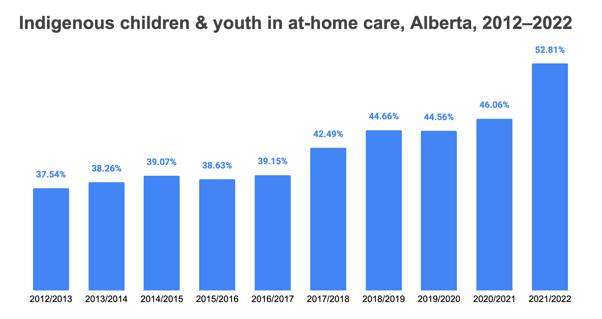

Call to Action #1: Road to Reconciliation
Stats and Facts
- 38% of Indigenous children in Canada live in poverty, compared to 7% of non-Indigenous children, according to the 2011 National Household Survey.
- There were around 46,000 child maltreatment investigations for Indigenous children and 240,000 investigations for non-indigenous children in 2021. Meaning Indigenous children made up a fifth of the child maltreatment investigations in 2021.
- For every 1000 Indigenous children, there are approximately 151 child maltreatment investigations
- For every 1000 non-Indigenous children, there are approximately 42 child maltreatment investigations.

- The 2021 Census reports that while Indigenous children make up 7.7% of all children in Canada, they account for 53.8% of foster children.
- Manitoba had the highest rate of under 15 Indigenous children to go to Foster care with it being 19.7 per 1000 children
- Prince Edward Island had the lowest rate of under 15 Indigenous children to go to Foster care with it being 1.7 per 1000 children